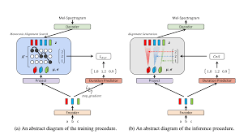

TTS
- TTS is an AI model that converts text to natural sounding spoken text. We offer two different model variates, tts-1 is optimized for real time text to speech use cases and tts-1-hd is optimized for quality. These models can be used with the Speech endpoint in the Audio API.
tts-1
The latest text to speech model, optimized for speed
tts-1-hd
The latest text to speech model, optimized for quality.
